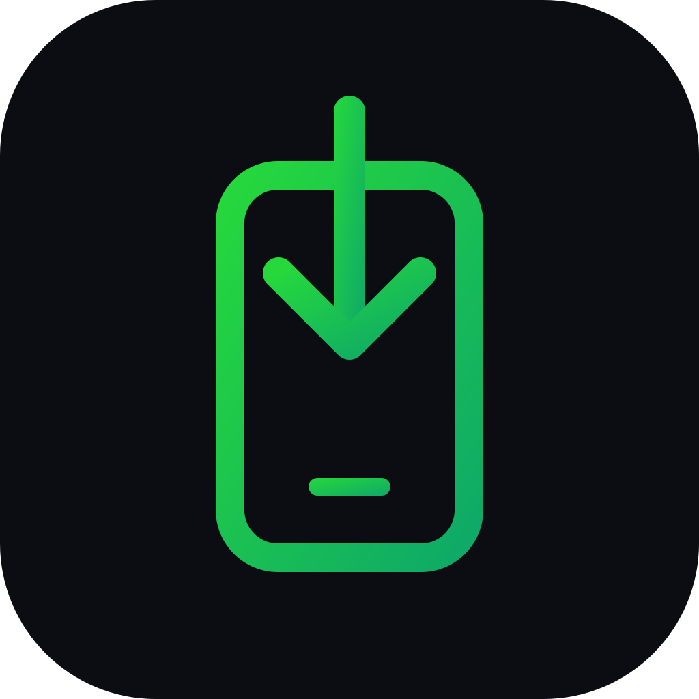

NortInstall — открытое приложение, которое скачивает, подписывает и устанавливает IPA прямо на вашем iPhone или iPad. Ни Mac, ни ПК, ни командной строки не нужно.
Начать установку Исходный кодNortInstall ставится сам, с вашим Apple ID: Developer Mode и Wi-Fi — всё, что нужно. Никаких DNS-профилей.
Скачать .ipaВозьмите сборку из раздела Сертификаты и включите DNS-профиль, чтобы её не отозвали.
К сертификатамНеподписанный .ipa публикуется с каждым релизом — для любых своих инструментов подписи.
Скачать .ipaТолько для установки enterprise-сборок. Если вы ставите NortInstall своим Apple ID (iOS 27+ или своя подпись) — DNS не нужен вовсе.
Профиль проекта уже настроен: никаких аккаунтов NextDNS и ручной настройки. Качаете файл, подтверждаете установку — готово.
Скачать профиль1. Скачайте в Safari.
2. Настройки → «Профиль загружен» → Установить.
3. После установки SideStore профиль можно удалить там же.
Сертификаты подписывают именно NortInstall — приложение из этого репозитория. Установили по сертификату → открыли → дальше NortInstall сам ставит SideStore и LiveContainer. Полный список сертификатов →
NortInstall, подписанный сертификатом A, для iOS 17.4–26.x. Требует включённый DNS-профиль.
Установить NortInstallЗапасная подпись того же NortInstall, если сертификат A отозван. Тоже через DNS-профиль.
Установить NortInstallПодпишите NortInstall своим аккаунтом: 7 дней на подпись, до 3 приложений. DNS не нужен.
Как подписатьЕсли приложение перестало открываться — сертификат отозван: включите DNS-профиль и переустановите сборку.
Учётные данные остаются на устройстве и используются только для подписи. Ни серверов, ни аналитики.
Нужен, чтобы приложение могло ставить IPA на вашу систему. На iOS 27+ создаётся автоматически.
Вставьте ссылку на .ipa — или откройте её из браузера по кнопке с сайта разработчика.
| iOS | Работает? |
|---|---|
| 27 и новее | ✅ Полностью, без ПК |
| 17.4 – 26.x | ⚠️ Нужен файл сопряжения, сделанный на компьютере |
| Ниже 17.4 | ❌ Не поддерживается |
nortinstall://install?url=<https-ссылка на .ipa>
open.html?url=<ссылка на .ipa> — покажет источник файла и передаст его в приложение.